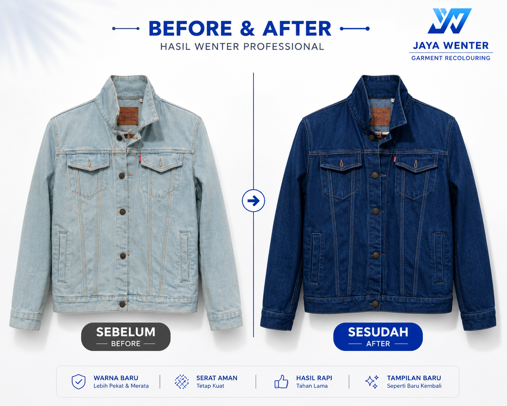
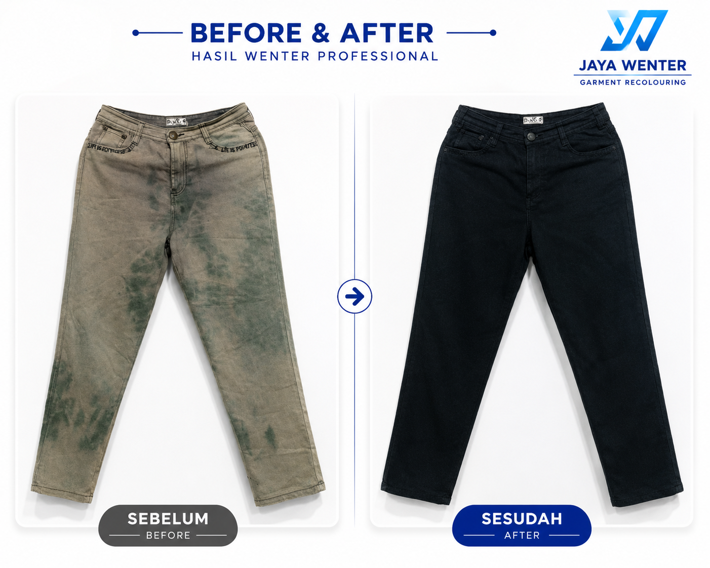
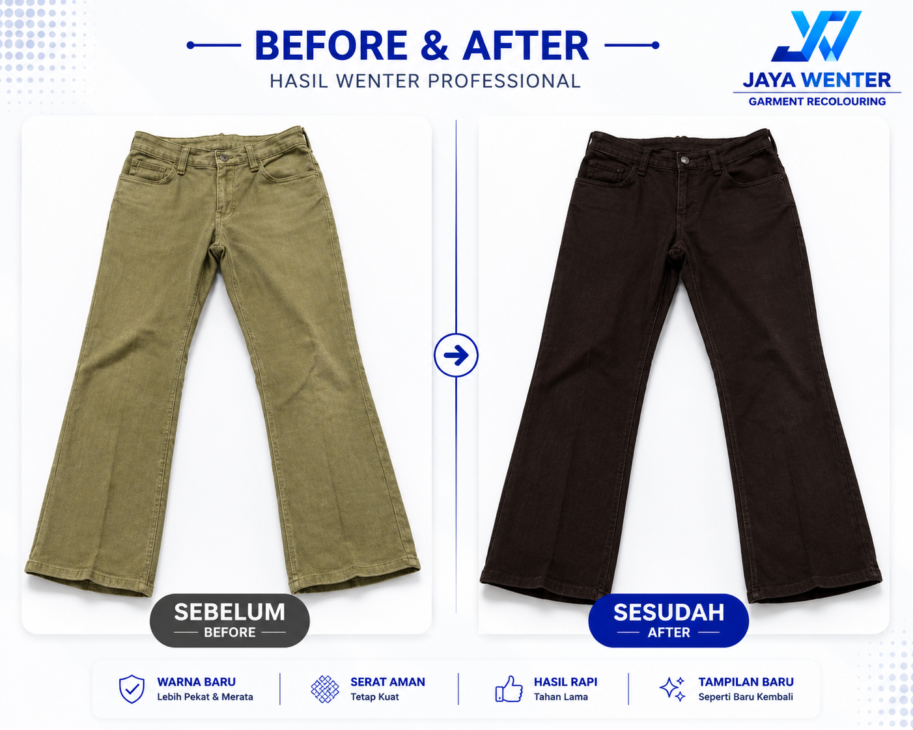

Keunggulan JAYA WENTER
WARNA BARU
Lebih Pekat & Merata
SERAT AMAN
Tetap Kuat
HASIL RAPI
Tahan Lama
TAMPILAN BARU
Baju Lama Memiliki Tampilan Yang Baru
Galeri Before After JAYA WENTER
Hasil wenter jeans, jaket, kaos, celana, tas dan berbagai pakaian yang telah kami kerjakan.





Layanan JAYA WENTER
Wenter Jeans
Mengembalikan warna jeans pudar agar kembali lebih pekat dan merata.
Wenter Jaket
Pewarnaan ulang jaket berbahan katun maupun jeans.
Wenter Kaos
Membuat warna kaos kusam kembali lebih segar dan menarik.
Wenter Celana
Cocok untuk celana kerja maupun celana kasual yang mulai memudar.
Wenter seragam dan jenis pakaian yang lain berbahan katun
Mengembalikan warna seragam katun dan jenis pakaian berbahan katun lainnya agar tampak lebih rapi.
Tarif Jasa Wenter Malang
| Celana Panjang | Rp30.000 |
| Jaket | Rp30.000 |
| Hoodie | Rp30.000 |
| Sweater | Rp30.000 |
| Kemeja | Rp30.000 |
| Kaos | Rp30.000 |
| Tas | Rp30.000 |
| Topi | Rp25.000 |
| Sepatu | Rp30.000 |
| Ukuran Jumbo | Menyesuaikan |
Testimoni Pelanggan & Review Google
⭐⭐⭐⭐⭐
Mikazen
Hasilnya bagus dan sesuai,
rekomended. Saya wenter 2 celana
dan 2 jaket. Terima kasih.
⭐⭐⭐⭐⭐
Rizky Safitri
Hasilnya bagus 😍😍😍
⭐⭐⭐⭐⭐
Pelanggan Google
Banyak pelanggan mempercayakan jeans, jaket, kaos dan seragam mereka kepada JAYA WENTER.
Lihat lebih banyak ulasan pelanggan melalui Google Maps:
Pertanyaan yang Sering Diajukan (FAQ)
Apa itu jasa wenter?
Jasa wenter adalah layanan pewarnaan ulang pakaian atau barang berbahan kain yang warnanya sudah pudar sehingga tampil lebih pekat dan segar kembali.
Pakaian atau barang apa saja yang bisa diwenter?
Kami khusus menerima pakaian dan barang berbahan katun serta jeans seperti celana jeans, kaos, kemeja, jaket, hoodie, sweater, rok, topi, tas berbahan katun atau kanvas, sepatu berbahan kain tertentu, serta jenis pakaian lainnya yang berbahan katun atau jeans.
Apakah semua jenis bahan bisa diwenter?
Tidak. Kami hanya menerima bahan katun dan jeans. Beberapa bahan yang tidak bisa diwenter dengan pewarna kami diantaranya :
- Polyester
- Parasut
- Nylon
- Wool
- Spandek
- Bahan sintetis lainnya
Apakah JAYA WENTER melayani wenter jeans?
Ya. Kami melayani wenter jeans berbahan katun maupun jeans denim agar warna kembali lebih pekat dan merata.
Apakah JAYA WENTER melayani wenter jaket?
Ya. Kami melayani wenter jaket, hoodie, sweater dan berbagai pakaian berbahan katun maupun jeans.
Apakah tersedia jasa wantex?
Ya. Banyak pelanggan mengenal layanan ini sebagai wantex atau wenter. Kami melayani pewarnaan ulang pakaian berbahan katun dan jeans.
Apakah warna bisa lebih pekat dari kondisi sekarang?
Dalam banyak kasus warna pakaian yang pudar dapat menjadi jauh lebih pekat dibanding kondisi sebelum diwenter, tergantung warna awal dan kondisi bahan.
Warna apa saja yang tersedia?
Hitam, Biru Tua, Hijau Tua, Coklat Tua, dan Abu-Abu Tua.
Berapa lama proses pengerjaan?
Estimasi pengerjaan sekitar 3–7 hari atau menyesuaikan banyaknya pakaian dan antrian.
Berapa biaya jasa wenter?
- Celana Panjang Rp30.000
- Jaket Rp30.000
- Hoodie Rp30.000
- Sweater Rp30.000
- Kaos Rp30.000
- Kemeja Rp30.000
- Rok Rp30.000
- Tas Rp30.000
- Topi Rp25.000
- Sepatu Rp30.000
Apakah bisa menerima pelanggan dari luar kota?
Bisa. Kami melayani pelanggan dari seluruh Indonesia melalui jasa pengiriman.
Apakah ada syarat khusus sebelum pakaian diwenter?
Pakaian harus dipastikan berbahan katun atau jeans. Dan pastikan sudah bersih dan bebas dari:
- Noda atau bekas minyak
- Noda atau bekas parfum
- Noda atau bekas deodorant
- Noda pemutih
- Noda cat
- Noda lem
- Noda tinta
- Noda membandel lainnya
Artikel Terbaru
Cara Menghitamkan Celana Jeans Kusam Tanpa Beli Baru
Pelajari penyebab warna jeans memudar dan cara menghitamkannya kembali agar tampak lebih pekat tanpa harus membeli baru.
Daftar Menjadi Agen Laundry JAYA WENTER
Kami membuka peluang kerja sama bagi pemilik laundry yang ingin menambah layanan wenter kepada pelanggan.
Anda dapat menawarkan layanan wenter tanpa perlu memiliki peralatan maupun proses produksi sendiri.
Cocok untuk laundry yang ingin meningkatkan omzet dan menambah layanan kepada pelanggan.
Isi formulir pendaftaran dan tim JAYA WENTER akan menghubungi Anda untuk menjelaskan skema kerja sama agen laundry.
Daftar Menjadi AgenPakaian Kusam Tidak Harus Diganti
Percayakan kepada JAYA WENTER untuk mengembalikan warna pakaian Anda menjadi lebih pekat, merata dan tampak seperti baru kembali.
Konsultasi Sekarang
Ketentuan Pengguna Jasa
Syarat dan Ketentuan Layanan JAYA WENTER
1. Jenis Bahan
Kami hanya menerima pakaian dan barang berbahan katun atau jeans. Pastikan pakaian yang Anda wenter berbahan katun atau jeans.
2. Barang Tertinggal
Pastikan tidak ada uang, dokumen, kartu, kunci, perhiasan, atau barang berharga lainnya yang tertinggal di dalam pakaian.
Kami tidak bertanggung jawab atas barang yang tertinggal.
3. Kondisi Pakaian
Proses wenter melibatkan pemanasan hingga sekitar 70°C, perendaman, dan pengadukan berulang.
Pastikan pakaian dalam kondisi layak untuk diproses.
4. Kerusakan Akibat Kondisi Awal
Kami tidak bertanggung jawab atas kerusakan yang disebabkan oleh kondisi pakaian sebelum diwenter seperti kain rapuh, jahitan lemah, sablon retak, bordir rusak, resleting rusak, atau kerusakan akibat usia pakaian.
5. Kebersihan Barang
Pakaian harus bebas dari noda minyak, parfum, deodorant, pemutih, cat, lem, tinta, dan noda lain yang menghambat penyerapan warna.
6. Hasil Pewarnaan
Hasil akhir dipengaruhi warna awal, jenis bahan, kondisi kain, dan usia pakaian.
Hasil tidak dapat dijamin sama persis dengan warna asli saat masih baru.
7. Perbedaan Warna
Pelanggan memahami bahwa warna hasil akhir dapat berbeda dari contoh warna, foto referensi, atau perkiraan awal karena karakteristik bahan, warna awal, kondisi kain, usia pakaian, serta kondisi barang yang berbeda-beda.
8. Barang yang Tidak Dapat Diproses
JAYA WENTER berhak menolak pengerjaan barang yang:
- Berisiko rusak saat diproses
- Menggunakan bahan yang tidak sesuai
- Memiliki kondisi yang tidak memungkinkan untuk mendapatkan hasil yang layak
Keputusan penerimaan atau penolakan barang sepenuhnya menjadi pertimbangan JAYA WENTER berdasarkan kondisi barang yang diterima.
9. Komplain dan Klaim
Komplain terkait hasil pengerjaan wajib disampaikan paling lambat 3 (tiga) hari setelah barang diterima pelanggan.
Komplain yang disampaikan setelah batas waktu tersebut dianggap tidak dapat diproses.
Pelanggan wajib menyampaikan komplain secara jelas disertai foto atau informasi yang diperlukan agar dapat dilakukan pemeriksaan dan tindak lanjut.
10. Persetujuan Pelanggan
Dengan menyerahkan, mengirimkan, atau memesan layanan JAYA WENTER, pelanggan dianggap telah membaca, memahami, mengetahui, dan menyetujui seluruh syarat dan ketentuan yang berlaku pada layanan JAYA WENTER.
Pelanggan juga memahami bahwa hasil akhir pengerjaan dapat dipengaruhi oleh kondisi awal barang, jenis bahan, usia pakaian, serta faktor teknis lainnya yang telah dijelaskan dalam ketentuan ini.
11. Penyelesaian Perselisihan
Apabila terdapat hal-hal yang belum diatur dalam ketentuan ini atau terjadi perbedaan pendapat antara pelanggan dan JAYA WENTER, maka penyelesaiannya akan diupayakan terlebih dahulu melalui musyawarah untuk mencapai kesepakatan bersama yang baik dan adil bagi kedua belah pihak.